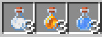
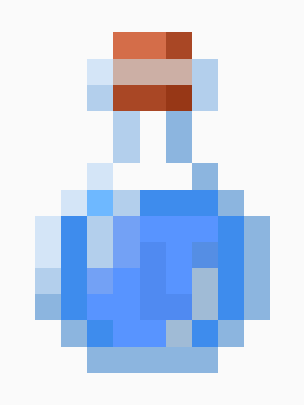
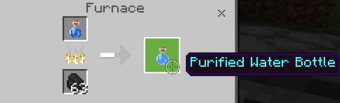
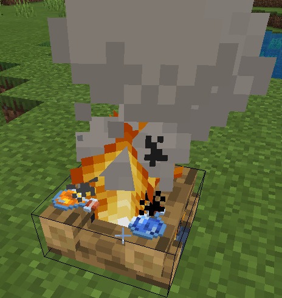
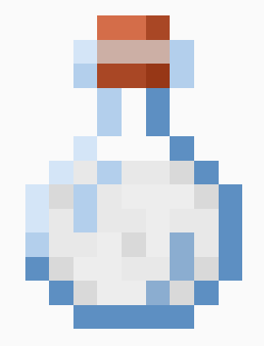
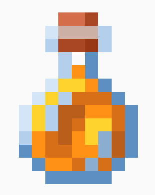
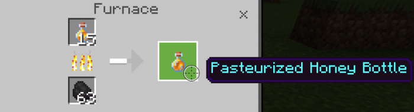
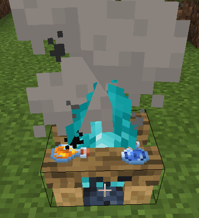

Minecraft has a health bar, hunger bar, experience bar, armor bar, and air bar but why doesn't it have a thirst bar? This addon fixes that problem that by adding a new drinking and thirst system.
The goal of this addon is to make a thirst bar system that will be compatible with almost every addon. Because of this goal and the limitations of addons in bedrock, your thirst bar will not go up if you drink a water bottle, milk bucket, honey bottle, or potions. Instead, you will have to create the three new items added in this addon which are the Purified Water Bottle, Milk Bottle, or Pasteurized Honey Bottle. When you first spawn into a world you will only have 10 thirst points and when it goes down to 0 you will get the Wither status effect every few seconds. When you die your thirst bar will not be refilled.

• Purified Water Bottle

The Purified Water Bottle can be created by smelting a Water Bottle in a furnace or smoker. You can also place a Water Bottle in a Campfire or Soul Campfire to turn it into a Purified Water Bottle. This drink gives five thirst points.


• Milk Bottle

The Milk Bottle can be crafted using 1 Milk and 3 Glass Bottles. This drink gives 3 thirst points. It can also clear all types of status effects similar to a Milk Bucket.

• Pasteurized Honey Bottle

The Pasteurized Honey bottle can also be crafted using a Furnace, Smoker, Campfire, and Soul Campfire. If you drink this, the Poison, Fatal Poison, and even Wither status effect will be cleared from you. This drink also gives 4 thirst points.


Thirst Bar
If you're going to the nether you will need to bring a ton of water because at the nether your thirst bar will go down 3x faster. Being inside lava will also make your thirst bar go down 3x faster. Meanwhile standing on sand and red sand will make your thirst bar go down 2x faster but being inside water slows downs the decrease of your thirst bar. If you're on creative you won't need to worry about your thirst because the thirst bar does not show up and does not decrease if you are on creative.
Install
Chaos Thirst [BP].mcpack
Chaos Thirst [RP].mcpack